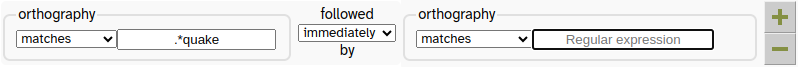

1 - Exploration
LaBB-CAT is a speech/language corpus management system that:
- stores transcripts with audio/video
- supporting a variety of upload formats
- and the definition of speech elicitation tasks;
- allows the addition of different layers of annotation, which can
- be manual or automatic, and
- have different granularities, from topic tagging to individual speech sounds;
- supports forced alignment to phone level using a speech recognition toolkit called HTK, or the Montreal Forced Aligner, or the WebMAUS service provided by BAS Web Services;
- allows cross-layer regular-expression search;
- search results are exportable to CSV for further analysis;
- batch acoustic measurement of segments using Praat is also supported, and
- transcripts and fragments of them are exportable in a variety of formats.
In this worksheet you will start exploring a demo LaBB-CAT corpus, to get a general idea of how to find your way around LaBB-CAT and how the language data is presented.
The demo corpus contains a collection of videos of people telling stories about their experiences during the earthquakes that struck Canterbury during 2010 and 2011. They have been orthographically transcribed using a tool called ELAN, so they have been time aligned to the utterance level; i.e. the start and end time of each line in the transcript has been manually synchronized with the recording. The ELAN transcripts, and their video and audio files, have been uploaded into LaBB-CAT.
LaBB-CAT is a browser-based system so the first thing to do is access it with your web browser. Generally, any modern browser should be fine (although some features you’ll see in later worksheets are only supported by Mozilla Firefox or Google Chrome).
- In your web browser, type in the following URL:
https://labbcat.canterbury.ac.nz/demo
You will be asked for a username and password. - The username is demo and the password is demo
The very first time you access LaBB-CAT, you will see the licence agreement for accessing the corpus data. - Press I Agree to continue.
You will see a page called “LaBB-CAT Demo” which has a menu of links along the top and a number of icons. Below the icons is some information about the corpus. This is the LaBB-CAT home page. - Click the where do I start? icon on the left.
The help page that pops up includes a brief description of LaBB-CAT and some tips for navigation and getting more information. - Read through at least the top section of the page to get some helpful tips, and then close the browser tab to return to the home page.
Transcripts and Participants
First we will look at ways to manually browse the corpus data.
- On the LaBB-CAT home page, select the transcripts option on the menu at the top.
You will see a list of transcripts in LaBB-CAT, together with some meta-data. The first twenty transcripts are listed, and there are controls at the bottom of the page to list others. - Click the name of the first transcript listed:
AP2505_Nelson.eaf
You will see a page with transcript text, and the video appears in the top right corner of the page. - Press the play button on the video.
As the video plays, you will see the current utterance highlighted in the transcript. You will also see that the current utterance appears as closed captions in the video. You can use the video controls as normal, including the full-screen button in the bottom right, to make the video occupy the whole screen. - Pause the recording.
- Click one of the transcript lines further down the transcript.
A menu will appear. - Select the ‘Play’ option on the menu.
You will see that playback starts at that line. Playback will stop when the participant finishes the utterance. - Select the Formats tab at the top of the page.
You will see a list of formats for exporting the transcript. - Select Plain Text Document
- Save the resulting file and then open it.
You will see the transcript in plain-text form.
Plain text is a format supported by many language analysis tools, so exporting text transcript allows you to use your favourite tools for whatever research you’re doing.
- If you have Praat installed on your computer, select the Praat Text Grid option. Save the resulting file on your desktop, and then open it with Praat.
You will see that the TextGrid has a couple of tiers, one for whole utterances, and one for individual words.
- Now select the participants option on the menu at the top.
You will see a list that looks similar to the ‘transcripts’ list we saw earlier, but this page lists names and meta-data of speakers rather than the recordings in which they appear.
Basic Search
Searching is often a two-step process: first you select which participants you want to search, using their participant attributes, and then you specify the pattern you want to search for.
The participants page you’ve got open has a number of filters listed across the top, which allow you to filter the list below.
- Select ‘F’ in the Gender box by clicking it.
You will see a list of the female participants only.
Notice that each participant has a check-box; if we wanted to, we could select specific participants from the list by checking/unchecking the boxes.
(But in this case, let’s search all of them, so leave all the boxes un-ticked.)
- Press the Layered Search button at the top of the list.
You will see a page that lists the speakers at the top, a number of tickable annotation layers in the middle, and an empty text box labelled ‘orthography’ below. - In the box labelled ‘orthography’ enter the word:
quake - Now press the Search button at the bottom (or hit EnterEnter).
A progress bar will appear below, and then shortly after that, a new tab will open, which has a list of search results in it.
Your browser’s popup-blocker might prevent the results page from opening - you can fix that either by allowing the popups in your browser, or by clicking the Display results link that appears after the search finishes.
Each match is highlighted and shown within a few words context.
- Click the first result in the list.
You will see the transcript page, which we have already seen, but with each match from the search highlighted (you will need to scroll down to see the second match). - The transcript page has opened in its own new browser tab.
Close that tab now to return to the results list. - Press the Audio Export button at the bottom.
- Save and open the resulting zip file.
The zip file contains the audio for the utterance that contained the word that matched your search.
You’ll see that extracted wav files are systematically named to include:
- the name of the transcript
- the start and end time of the extracted utterance
- If you also have Praat installed on your computer, go back to the results page and press Utterance Export button. Save and open the resulting zip file.
You’ll see that the TextGrid names match the audio file names in the previous zip file.
If you open a TextGrid in Praat, you’ll see it includes a tier for the whole utterance transcript, a tier with an interval for each word, and a target… tier which tags the word that matched the word you searched for.
Exporting similarly-named utterance wav files and Praat TextGrids provides a possible way to process or analyse search results offline in Praat.
- Back on the results page, click the CSV Export button.
- Save the resulting file, and open it.
You may have to specify some import options, in which case it may be handy to know that the field separator is comma, and the fields are quoted by speech marks.
If you’re using Microsoft Excel and you find it doesn’t open all the columns correctly:
- Create a new workbook in Excel.
- Click the ‘Data’ tab.
- On the “Get External Data” ribbon click ‘From Text’.
- Select the CSV file you downloaded.
- Select ‘Delimited’ and click Next.
- Ensure ‘Comma’ is the only delimiter ticked and click Next.
- Click Finish and then OK.
You will see a spreadsheet with one line per selected result, and various columns containing information about the speaker, the corpus, the match line and word, and a URL to the interactive transcript for the match.
With this spreadsheet, you can work ‘offline’ with the results, tagging them, computing statistics in Excel, R, or any other program that can work with CSV files.
- Close the CSV file, and got back to the results page.
- Close the results page, and you’ll return to the search page.
Regular Expressions
- On the search page, in the orthography box, prefix the word “quake” with
.*i.e.:
.*quake
This is a ‘regular expression’ that allows you to search for patterns instead of matching exact text:
.means “any letter, number, or other character”*means “zero or more of the previous thing”,
so.*means “any number of characters of any kind”quakemeans literally the sequence of letters ‘quake’
so.*quakemeans “any word ending in ‘quake’”
- Press Search.
Depending on your browser, you may have to click the Display results link to see the results page.
Now your results include all the instances of the word “earthquake”, plus instances of “quake” as well.
Up until now, we’ve only been matching against one word at a time. Now we’re going to create a search pattern for a chain of words.
- Close the results tab of the previous search.
- Back on the search page, next to the orthography box where you entered the regular expression, there’s a button for adding a column to the ‘search matrix’. Click it.

Now you will see that our ‘search matrix’ is two words wide. - In the new orthography box on the right, enter the regular expression:
is|was
This regular expression is:
ismeans “the word ‘is’”|(the vertical bar character) means orwasmeans “the word ‘was’”
sois|wasmeans “the word ‘is’ or the word ‘was’”
- Press Search.
You should see results are now words ending in ‘quake’ followed by either ‘is’ or ‘was’.
 You can get more information about regular expressions by using the online help back on the search page.
You can get more information about regular expressions by using the online help back on the search page.
In this worksheet you have seen that:
- LaBB-CAT is a repository for recordings and their transcripts;
- Transcripts can be exported in a variety of formats;
- Meta-data can be attached to transcripts (transcript attributes) and to participants (participant attributes);
- You can filter lists of participant (or transcripts) on the basis of meta-data;
- You can search the texts of the transcripts for patterns using ‘regular expressions’;
- Search results can be exported to CSV files for further processing;